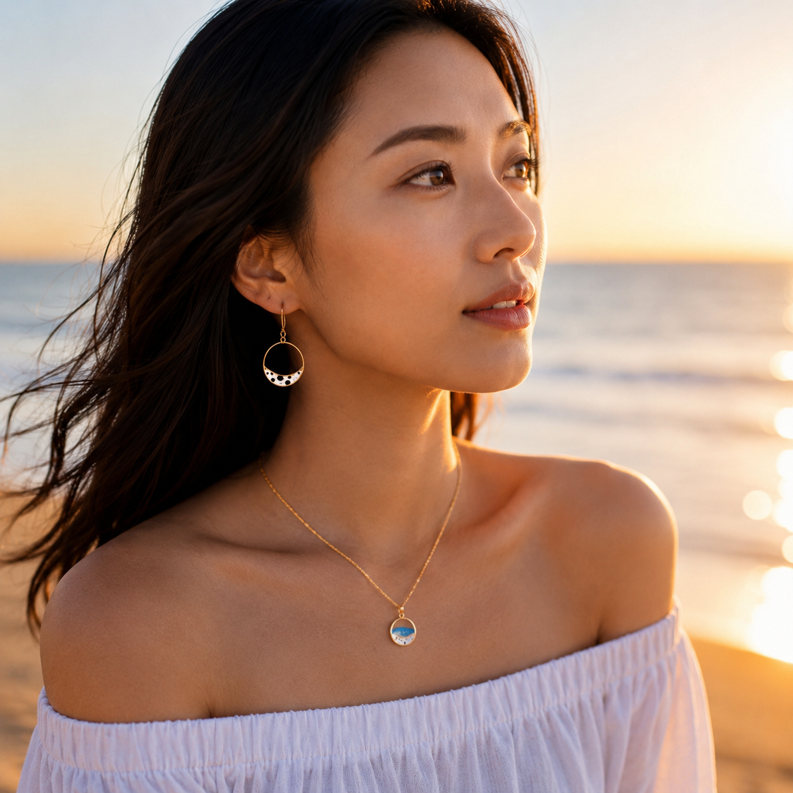

薄桜 — うすざくら —
桜を思わせる、やわらかな色合い。肌なじみが非常によく、耳元に上品でやさしい彩りを添えます。落ち着いたトーンの装いにも、そっと女性らしさを醸し出します。
朝の身支度。鏡の前で、ふと耳元に触れた指先。
いつもの日常が、少しだけ引き締まるような、心地よい緊張感。
歩くたびに、話すたびに、耳元の小さな輪が静かにめぐります。
そのリングの内側にそっと沈められているのは、日本刀の地金である「玉鋼（たまはがね）」。
透き通るレジンの軽やかさの奥に、千年以上受け継がれてきた伝統の静かなきらめきが、ふと顔をのぞかせます。
派手すぎず、けれど確かな存在感。それは、大人の女性の日常にこそふさわしい、凛とした美しさです。
仕事へ向かう電車の中、大切な人と過ごすカフェのテラス、一息つく夕暮れ時。
めぐる時間のなかで、あなたの魅力を引き立てる、ひとひらの伝統を耳元に。
装いに季節の色をひと粒。肌なじみの良い5つの伝統色をご用意しました。
お好きな色を選択して、着用イメージと商品の詳細をご覧ください。
アクセサリーの奥で静かにきらめくのは、単なる素材ではありません。
それは、日本刀の原料として尊ばれてきた「玉鋼（たまはがね）」です。
日本独自の製鉄法「たたら吹き」。純粋な砂鉄と木炭だけを使い、粘土で作られた炉のなかで、職人（村下・むらげ）の指揮のもと三日三晩、炎を絶やさずにじっくりと焼き上げます。自然の恵みと職人の技が極限で融合した瞬間にのみ、この世に生まれる極めて希少な鋼です。
現在、玉鋼の製造は公益財団法人日本美術刀剣保存協会が年に数回だけ操業する「日刀保たたら」など、極めて限定された場所と人の手でのみ行われています。日本刀の鍛錬に用いられるその一握りの結晶を、贅沢にも切り出して現代の装いへと仕立てました。
玉鋼は、一つひとつ形や内部の気泡、色の濃淡が異なります。レジンの中に閉じ込められた鋼の欠片は、光を受ける角度によって、ある時は力強く、ある時は穏やかに輝きを変えます。あなただけの「一点もの」としての価値をお楽しみください。

何百年の時を経て今なお受け継がれる日本の技。
その魅力を現代の生活に散りばめ、後世に繋げたい。
「伝統屋 暁（でんとうや あかつき）」という屋号には、**「職人や技術が再び陽の目を見ていく」**という意味が込められています。
失われつつある日本独特の技術や文化を応援し、職人の魂がこもった逸品を、お客様ひとりひとりの暮らしに寄り添える形でお届けすることが私たちの使命です。
『真砂鋼廻』もまた、伝統技術と現代のライフスタイルが美しく結びついた結果生まれた作品です。手作りにこだわり、国産にこだわった逸品。手に取るあなたと、その大切な方、そしてものづくりを支える職人。関わるすべての人へ、温かいご縁が繋がりますように。
| 商品名 | 玉鋼リングピアス・イヤリング【 真砂鋼廻 -まさのはがね めぐり- 】 |
|---|---|
| 価格 | 公式販売ページにてご確認ください |
| 材質 | 玉鋼、レジン（エポキシ樹脂）、真鍮（ロジウムメッキ処理） |
| サイズ | 全長：約37mm ／ リング直径：約30mm |
| カラー展開 | 薄桜（うすざくら）／ 象牙色（ぞうげいろ）／ 天色（あまいろ）／ 青竹（あおたけ）／ 紅緋（べにひ） |
| 対応タイプ | ピアス ／ イヤリング |
| アレルギー対策 | 耳に触れる金具部分には金属アレルギー対策としてロジウムメッキ加工を施しています。 ※すべての方にアレルギーが起きないことを保証するものではありません。 |
玉鋼は透明度の高い高品質レジンのなかに完全に封入されております。そのため、直接空気に触れて錆びる心配はなく、特別なお手入れは不要です。ご使用後は柔らかい布で皮脂や汗を拭き取ることで、より長くクリアな輝きを保てます。
金具部分にはニッケルフリーのロジウムメッキ処理を施し、アレルギー対策を行っております。ただし、体質によって反応が出る場合もございますので、お肌に合わない場合はご使用を中止し、医師にご相談ください。
本商品はひとつひとつ職人の手作業で玉鋼をレジンに沈めて仕立てています。また、玉鋼そのものも天然の砂鉄から焼き上げるため、一粒ごとに形や輝きが異なります。手作りならではの「唯一無二の個性」として愛着を持ってお楽しみいただければ幸いです。
丁寧にお作りしてから発送するため、ご注文確定後およそ10日〜21日程度お時間をいただいております。時期によって前後する場合がございますので、詳細は公式商品ページをご確認ください。
ご自身の日常を彩るご褒美として。あるいは、大切な方への想いを伝える贈り物として。
千年の歴史と職人のこだわりが詰まった『真砂鋼廻』を、ぜひお手元に。
※別ウィンドウで「伝統屋 暁」公式商品ページへ移動します。